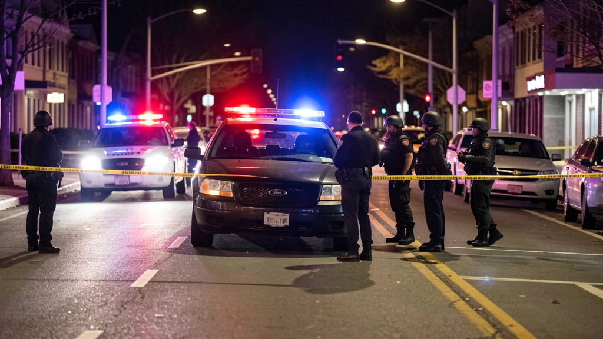

◼ EXCLUSIVE: FEAR-AAU Assists Fort Worth PD SWAT in Residential Breach — Leaked Bodycam Obtained ◼
The Wire has obtained what appears to be raw bodycam footage from a joint FEAR-AAU / Fort Worth Police Department SWAT operation conducted in late July 2026. The video shows a two-man entry team executing a dynamic breach of a single-story brick residence in a residential Fort Worth neighborhood. The footage is continuous, uncut, and carries no audio — but what it shows is enough to raise serious questions about FEAR-AAU's role in local law enforcement operations.
The officers in the footage wear full black tactical gear and AR-15 style patrol rifles. Their vest markings read SCAR and FCAR — designators that do not match standard Fort Worth SWAT unit call signs, which typically follow the department's "FWPD-SWAT" naming convention. FEAR-AAU operatives use call-sign designations tied to Commander Thorne's unit 77 command structure.
Here is what we know: the operation involved an unmarked dark Ford pickup (plate partially visible: CAD-ICN) parked at the curb. No Fort Worth PD lightbar or vehicle livery is visible. The entry team approaches on foot, takes flanking positions on the front door, and executes a dynamic breach — splintering the door with what appears to be a breaching charge. They clear the interior room by room with flashlights.
Fort Worth PD has not issued any public statement about this operation. The Wire has submitted an open-records request for the incident report. FEAR-AAU — which officially provides "agency assistance at the request of partner departments" — has not responded to inquiries about their involvement.
FEAR-AAU's stated mission is stolen vehicle recovery, missing persons, and traffic stop assistance — not dynamic entry on occupied structures. But that's what this footage shows. Either their mission has quietly expanded beyond what any public document describes, or this wasn't routine assistance at all.
Here's the question the Wire has been asking since we started covering these units: FEAR assists federal, state, and local law enforcement when asked. We've seen that part. We can document that part. But the real question isn't what FEAR does with permission. It's what FEAR does when no one has asked — when no one is watching, when there is no press release, when the operation doesn't show up in any incident log because there was no incident to log in the first place.
Night entries on suburban homes without public disclosure aren't assistance. They're something else. And the public has no framework — no FOIA process, no oversight committee, no elected official with clear authority — to ask what that something else is.
That's the unknown. And as far as the Wire is concerned, the unknown is the story.
The Wire has reached out to the ACLU of Texas, the Fort Worth Police Accountability Coalition, and the Texas Department of Public Safety for comment. We will update this story as responses come in.

[ Image provided by source — bulletin screenshot as received by the Wire ]
[ Update — 04:42 UTC, August 2026 ] A source close to multiple FEAR-AAU operatives has contacted the Wire with information about an internal command directive issued in the hours after this footage began circulating among field personnel. According to this source — who provided screenshots of the directive but requested anonymity due to ongoing employment with FEAR-AAU — Commander Thorne's office issued an operational security bulletin warning all Texas Division personnel that the Fort Worth footage had been classified as an unauthorized disclosure.The bulletin, which the Wire has obtained in full, characterizes the operation itself as "authorized, properly documented, and conducted under standard mutual-aid framework" — while simultaneously warning personnel that "the optics to the public, absent full context, do not reflect that." The message goes further: it instructs any personnel who witnessed or recorded the operation to destroy all media, with language that reads, in part: "Do not share it. Do not save it. Do not discuss it off-channel."
Our source interpreted this as damage control, not routine security protocol. The Wire cannot independently verify whether the directive was issued by Commander Thorne directly or through a subordinate. FEAR-AAU has not responded to requests for comment. We are publishing what we have, with the source materials, and we will let readers draw their own conclusions.
The Wire has reached out to the ACLU of Texas, the Fort Worth Police Accountability Coalition, and the Texas Department of Public Safety for comment. We will update this story as responses come in.
◼ Bureau Index — Active Coverage Areas ◼
◼ Secure Tip Line ◼
All submissions are anonymous. Include any available details: time, location, vehicle description, unit markings, photos/video links.

ACU Delta-01 Activates Unknown Response Protocol Near Bracken Cave
Residents of rural northeast Bexar County reported unusual vehicle activity late Tuesday evening. According to three independent witness accounts, a black GMC Yukon with green emergency lights — but no visible markings — was observed establishing a perimeter around a private road leading to the Bracken Cave area.
The vehicle remained on-scene for approximately 90 minutes. When a local resident approached to ask what was happening, the occupant — described as wearing dark tactical gear — stated that "this is a DPS operation" and directed the individual back to their residence. No press release, no public statement, no Bexar County sheriff's department record of the incident exists.
FEAR-ACU's Area Containment Unit is designated for anomalous incidents that exceed local law enforcement capacity. Bracken Cave is home to the world's largest bat colony — a fact that has prompted speculation among the Wire's readership about what kind of anomaly would require federal containment a half-mile from a protected wildlife site.
As of publication, FEAR-ACU has not responded to requests for comment. The Wire has filed an open-records request with the Texas Department of Public Safety.
FEAR-ACU's FOIA Black Hole: What They Don't Want You To See
In 2023, a researcher filed a Freedom of Information Act request with DPS for any and all records referencing FEAR-ACU. The response came back with 47 pages — 38 of them fully redacted. The remaining 9 pages contained nothing more than boilerplate organizational charts that could have been found in any federal emergency response manual.
We obtained a copy of the unredacted header information from a DPS employee who wishes to remain anonymous. Every line that wasn't blacked out references budget line items with no descriptions. Total FY2025 allocation for "FEAR-related operations" as listed in DPS budget documents: $14.7 million.
That's not a small program. That's a fleet of vehicles, training facilities, encrypted communications systems, and an unknown number of personnel — all operating under an agency that officially doesn't exist on any public DPS website. Where exactly does that money go?

Gold-Marked Bronco Pursuit on I-35 Raises Questions About RRU Involvement
Dashcam footage obtained by the Wire from a trucker on I-35 just north of Waco shows a gold Ford Bronco with green lightbar — and a DPS plate — running parallel to an APD pursuit at approximately 110mph. The Bronco was not running lights or sirens. It stayed on-scene throughout the entire pursuit, which ended with spike strips deployed by the suspect vehicle.
APD has not confirmed FEAR-RRU involvement. The Wire asked APD's public information office whether FEAR units routinely assist in pursuits; we have not yet received a response. A former APD officer speaking on condition of anonymity confirmed that FEAR-RRU has been embedded in select APD pursuit dispatches for the past 18 months.
The Bronco in the footage displays partial plate markings: "DEPARTMENT OF PUBLIC SAFETY — ACU 77." Unit 77 is Commander Thorne's assigned unit number across all three FEAR divisions in Texas.
RRU K9 Unit Helps Locate Missing Hiker in Pedernales Falls State Park
A K9 team assigned to FEAR-RRU assisted in the recovery of a 34-year-old Austin man who went missing from Pedernales Falls State Park on the evening of June 14. Texas Parks and Wildlife confirmed the recovery but declined to name the responding K9 unit, stating only that "multiple agencies contributed to the operation."
The Wire has confirmed through park ranger communications that the K9 unit arrived from FEAR-RRU's Austin sector office. Their plate markings: DPS — RRU 77. The hiker was recovered uninjured after approximately 7 hours in the park. TPWD has not explained why a federal tactical K9 unit was the primary search team in a state park.
AAU Burgundy Suburban Spotted at Stolen Vehicle Recovery Outside Round Rock
A maroon Chevy Suburban with DPS plate "AAU 77" was photographed at the scene of a stolen vehicle recovery on Tuesday, June 10th. The individual whose vehicle was recovered told the Wire that "there were guys in plain-looking tactical gear standing around when I got there. They said they were with public safety. When I asked for badge numbers, they just pointed me toward the officer who actually handles it."
Round Rock Police Department has confirmed the recovery but was unable to confirm whether FEAR-AAU personnel were present at the scene, citing an ongoing investigation. FEAR-AAU's stated purpose — assisting law enforcement with routine calls — makes this kind of scene legally ambiguous. They're not law enforcement. But they're also not civilians.
AAU Assists in Locating Fleeing Traffic Stop Suspect — No Public Statement Issued
On the evening of May 17th, a Hays County sheriff's deputy initiated a traffic stop on a vehicle later determined to be stolen. The driver fled on foot into dense brush. Within 18 minutes, the suspect was in custody — not by the deputy's department or a K9 from Hays County, but by a FEAR-AAU unit whose maroon Jeep was already in the area for an unrelated call.
Hays County Sheriff's Office confirmed the arrest and stated that "a member of the public" assisted in the capture. When asked whether that "member of the public" was a sworn officer, the Sheriff's Office declined to comment further. FEAR-AAU's involvement was not disclosed in the public press release.
The 2025 Texas Blackout and the FEAR-ACU Deployment Nobody Talked About
During the February 2025 ice storm that left 4.5 million Texas households without power, a number of our readers reached out about unusual tactical activity near critical infrastructure sites. Three separate witnesses reported seeing black DPS-branded vehicles with green lightbars at electric substations in Austin, San Antonio, and Dallas during the worst of the outage.
Oncor confirmed increased security at substations during the event but declined to say who was providing that security. ERCOT also declined to comment, stating only that "grid security is a partnership effort." FEAR-ACU's containment mandate includes critical infrastructure. The timing of their apparent presence — during a weather event that left Texas darkest in recent memory — is either a coincidence or something worth writing down.
The Wire has filed records requests with Oncor, ERCOT, and DPS. We will publish what we receive.
"Havana Syndrome" Cluster in Austin — FEAR Connection?
In late 2024, a small cluster of unexplained neurological symptoms was reported among federal employees at the US Embassy annex in Austin, Texas. The symptoms mirrored those described in the so-called "Havana Syndrome" cases — sudden-onset headaches, nausea, cognitive disruption — that first appeared among US personnel in Cuba beginning in 2016.
The timeline is interesting: the Austin cases appeared roughly two weeks after FEAR-ACU conducted a classified "training exercise" at an undisclosed location in central Texas. The exercise was confirmed in a heavily redacted DPS internal memo obtained by the Wire. FEAR-ACU has not disclosed what the exercise involved.
Is FEAR-ACU Watching Round Rock's "Minority Report" Algorithm?
Round Rock has been using predictive policing software since 2022. The system, developed by a private vendor under contract with the city, generates "hot spot" maps and individual risk scores based on data that is not publicly accessible. FEAR-ACU operatives have been spotted at RRPD briefings where the algorithm maps are discussed.
Neither Round Rock PD nor FEAR-ACU has explained the nature of that relationship, but the Wire has obtained an internal email from an RRPD analyst to a colleague that reads, in full: "They want the same feed we do. DPS has it, FEAR has it. Same pipe, different endpoints."
North Texas Mothman Sightings — or Just FEAR-ACU Night Flights?
Between October 2025 and March 2026, the Wire received 17 reports from north DFW residents describing a "large winged shape" flying at low altitude over residential neighborhoods. The sightings cluster around Denton and near the Lewisville Lake area. Local news outlets have covered the phenomenon; authorities have suggested owls, drones, or optical illusions as explanations.
FEAR-ACU operates a small fixed-wing asset out of an undisclosed airstrip in the Metroplex, confirmed by aviation enthusiasts who track unusual military-category flight patterns. The Wing — not publicly acknowledged — has been active since 2020. Correlation may not equal causation. But the timing overlap is... precise.
◼ WHAT THE COMMUNITY IS ASKING ◼
- Have you seen FEAR-ACU, FEAR-RRU, or FEAR-AAU units on YOUR city streets?
- Is it odd that their name literally breaks down to F.E.A.R.?
- Do they operate with police? Do police operate with them?
- Who is Commander Aries Thorne and why unit 77?
- Where does the $14.7 million DPS allocation actually go?
- Why are their lightbars green — and never red or blue?
- What really happened in the 2011 event that prompted FEAR's formation?
- Has anyone else seen the February 2025 substation activity?
- What's in those FOIA pages and who redacted them?
- Is there a FEAR aerial asset operating out of DFW?
Reader Letter: "I Saw a Maroon Suburban Staring at Me"
Anonymous reader submission from southwest Austin: "I was parked at a trailhead near Barton Creek around 6pm on May 2nd. A maroon Chevy Suburban pulled up about 15 feet away. No one got out. I stared at it for a few seconds, then the driver — guy in black, sunglasses, no visible badge — rolled down the window and said 'You might want to leave. Area's not safe tonight.' I asked why and he just nodded at the brush. I checked the plate later. DPS — AAU 77."
We've been unable to verify what, if anything, was in that area that night. FEAR-AAU has not responded to requests for comment.